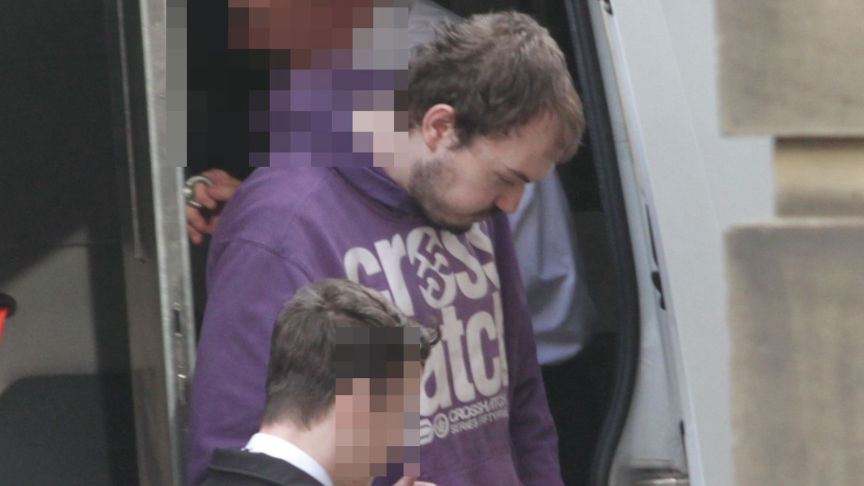
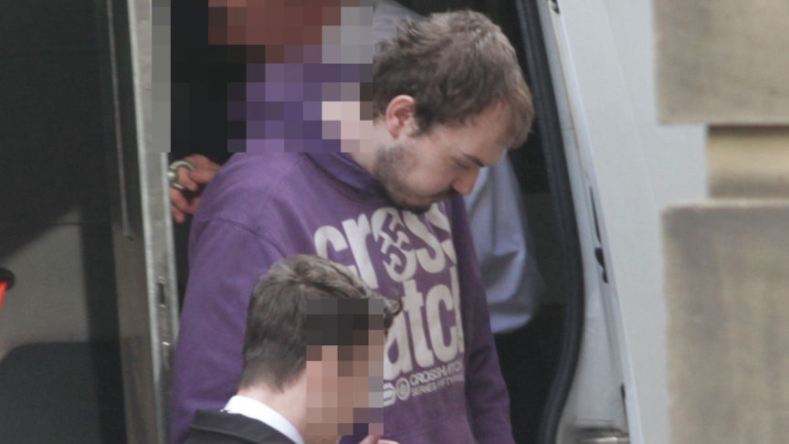

Scottish Man Jailed for Purchasing Weapons on the Dark Web
~2 min read | Published on 2023-10-27, tagged Child-Abuse, Child-Porn, Firearms, Sentenced, Weapons using 328 words.
The Edinburgh High Court sentenced a pedophile who attempted to import a Glock and ammunition he purchased from a weapons vendor based in the US.

In addition to paying £1,000 for a pistol and 100 rounds of ammunition, 28-year-old James Maxwell conducted online searches of the Dunblane school massacre, where the shooter killed 16 children and a teacher before taking his own life.
Maxwell's plan of importing the weapons was discovered by US authorities inspecting outgoing packages. The customs officers intercepted a suspicious package addressed to Maxwell's address and opened it. Inside the package, the officers reportedly found a Glock 17 handgun, a magazine, and two boxes of hollow-point bullets hidden inside an electronic device.
US authorities removed the weapons and notified Police Scotland of the incoming package. The package was delivered to Maxwell's residence on January 11, 2023.
The investigators raided Maxwell's home shortly after the package was delivered. They allegedly found him in the process of opening the package. They also found a laptop with a manual on how to use a Glock pistol.
On being questioned, Maxwell admitted he had paid £1,000 for the weapons. He also claimed that he was feeling suicidal when he placed the order and did not know how to cancel it after he had stopped feeling suicidal.
Forensic analysis of Maxwell's electronic devices revealed that he had been searching terms such as "best suicide method," "suicide by gunshot UK" and "primary schools in Glasgow."
The investigators also found hundreds of files containing child abuse and bestiality material.
Maxwell pleaded guilty to two counts each, of purchasing and attempting to acquire and possess a firearm and buying and attempting to acquire and possess ammunition in September. He also pleaded guilty to making an indecent image of a child and possession of extreme pornographic images.
On October 26, the Edinburgh High Court sentenced Maxwell to five years in prison and a license period of four years. The court also placed him on the sex offenders register for seven years.

James Maxwell
In addition to paying £1,000 for a pistol and 100 rounds of ammunition, 28-year-old James Maxwell conducted online searches of the Dunblane school massacre, where the shooter killed 16 children and a teacher before taking his own life.
Maxwell's plan of importing the weapons was discovered by US authorities inspecting outgoing packages. The customs officers intercepted a suspicious package addressed to Maxwell's address and opened it. Inside the package, the officers reportedly found a Glock 17 handgun, a magazine, and two boxes of hollow-point bullets hidden inside an electronic device.
US authorities removed the weapons and notified Police Scotland of the incoming package. The package was delivered to Maxwell's residence on January 11, 2023.
The investigators raided Maxwell's home shortly after the package was delivered. They allegedly found him in the process of opening the package. They also found a laptop with a manual on how to use a Glock pistol.
On being questioned, Maxwell admitted he had paid £1,000 for the weapons. He also claimed that he was feeling suicidal when he placed the order and did not know how to cancel it after he had stopped feeling suicidal.
Forensic analysis of Maxwell's electronic devices revealed that he had been searching terms such as "best suicide method," "suicide by gunshot UK" and "primary schools in Glasgow."
The investigators also found hundreds of files containing child abuse and bestiality material.
Maxwell pleaded guilty to two counts each, of purchasing and attempting to acquire and possess a firearm and buying and attempting to acquire and possess ammunition in September. He also pleaded guilty to making an indecent image of a child and possession of extreme pornographic images.
On October 26, the Edinburgh High Court sentenced Maxwell to five years in prison and a license period of four years. The court also placed him on the sex offenders register for seven years.